5 Reviewing Standard Projects
5.1 Test Scores
After opening a project, click on the Readability Scores icon on the project sidebar, and then click on Scores beneath that. Here you can view all the test scores, as well as their respective explanations and recommendations.
The top area of the Scores window is the score grid. In here there are four columns:
- Test: the name of the readability test.
- Grade Level: the minimum grade level that the test determined the document is suitable for.
- Reader Age: the minimum reader age that the test determined the document is suitable for. The reader age is determined from the test’s score. It can be shown as either a range for the entire grade, or be rounded to the semester that the grade score falls into.
- Scale Value: the index value for tests that use special scales.
- Predicted Cloze Score: the estimated score if the document were to be used for a cloze test. Note that cloze scores will be displayed in percentage format (i.e., 0–100) instead of floating-point format (i.e., .0–1.0) for easier reading.
Note that most tests have just one type of result (e.g., grade level), so non-applicable columns are left blank. For example, a Gunning Fog result may be a grade level of 8.3. This translates to an eighth grade level reader (in his or her third month of class). Because this test only returns a grade level and age, the Scale Value and Predicted Cloze Score columns are empty. Another example is a result for the Flesch Reading Ease test, which could be a scale value of 79. This test has its own scale (instead of a grade level) so its age, grade level, and cloze columns are empty.
When a grade-level test scores a document at its maximum value, a + will be appended to the score. Although most grade-level tests can score up to 19, some tests which are designed for primary and secondary education materials will have lower maximum scores. For example, Wheeler-Smith is designed for primary-age materials and its maximum score is the fourth-grade level. If a document’s Wheeler-Smith score is 4, then it will be displayed as 4+.
Select any test in the results grid to display an explanation of its score in the window below.

Along with an explanation of the test’s results, the factors that it uses to determine difficulty are also shown. For example, if Sentence Length and Word Length have an X next to them, then these variables are used in the test’s equation. To lower the score for a given test, try to improve its factors (e.g., lower the document’s average sentence length).
Finally, the averages (means) of your test scores and ages are displayed at the bottom of the results window. Their respective modes, medians, and standard deviations are also included if Extended Information is enabled. Note that scores are truncated when searching for the grade-level mode. For example, 6.7 and 6.2 will both be treated as 6. Mode generally requires discrete data to produce meaningful results; therefore, grade-level scores are converted to their base grades for this statistic.
When calculating these statistics, failed test scores are treated as missing observations and not included. For example, let us say that you included 5 tests, but one of them could not be calculated. In this case, the valid 4 scores will be added and divided by 4 (not 5) to acquire the means. Also, grade range scores–such as 5–6 from New Dale-Chall–will be converted to its own average (e.g., 5–6 will be 5.5).
To remove any test from this list, select it and press Ctrl+Del (, ) or ⌘+⌫ () on your keyboard. To edit a custom test, double-click on it in this list. To view the help for a standard test, double-click on it in this list.
There will also be readability graphs in this section if you included their respective tests. Refer to Section 5.2 for further information.
5.2 Readability Graphs
There are numerous readability tests that are graphically plotted, including Fry, Raygor, Flesch, Lix, Gilliam-Peña-Mountain, FRASE, Crawford, and Schwartz. These graphs consist of either grade-level or reading-level regions that a document may fall within. They also include indicators for the most influential factor for the document’s reported level (i.e., word difficulty vs. sentence difficulty).
To view these graphs, click on the Graphs icon in a standard project or the Readability Graphs icon in a batch project.
Let us first review a Fry graph:

To read this graph, search for the red data point–this value represents the document’s score. Note that there are numbers 1 through 17+ on this chart, each partitioned into small slices. The band that the data point falls into is the grade level of this document. In the example above, the data point is inside of the 8th grade slice (notice that the 8 is marked in blue).
Running through each slice is a gray line, which is a separator to help show the most predominant cause of the document’s difficulty. If the data point is above the gray line, then the strongest influence on the document’s difficulty is high-syllable words. If it is below the line, then the strongest influence is long sentences. In the above example, it is above the line, implying that it is slightly more influenced by high-syllable words. However, because it is fairly close to the line, this document is well balanced between difficult words and difficult sentences.
If the data point does not fall inside of a slice then the test will fail. For example, the Raygor graph below indicates that the document’s overly-long words caused the test to fail:
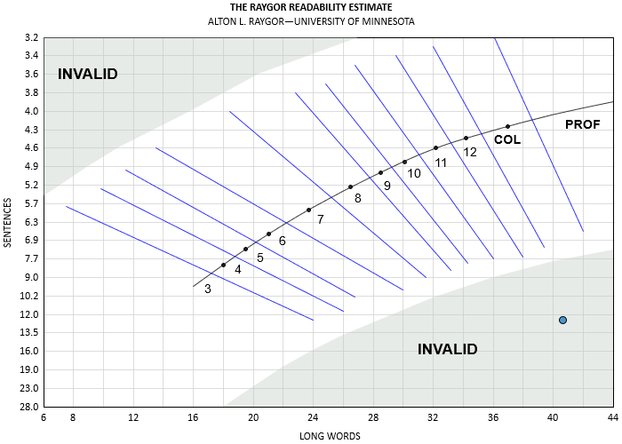
The document was almost classified as 12th grade level material, but its long words make it too difficult to be assigned to any grade. At this point, you would want to review the document’s lengthy sentences (select Highlighted Report under the Grammar sidebar item) and try to shorten some of them.
The Gilliam-Peña-Mountain graph is a variation of Fry designed for Spanish text. It is identical to Fry, except that its x-axis begins at 175 (instead of 108). This enables this graph to plot Spanish text, which usually has a much higher syllable count than its English counterpart. Below is an example of a Gilliam-Peña-Mountain graph:
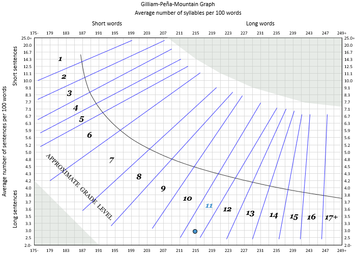
The Schwartz graph is another Fry-like graph, which is designed for German (primary and secondary-reader) text. Although similar in appearance to Fry, this graph uses its own reading-level regions mapped to the German materials it was trained on. This approach differs from Gilliam-Peña-Mountain, which uses the original Fry template and adjusts its axis ranges to accommodate Spanish text. Below is an example of a Schwartz graph:
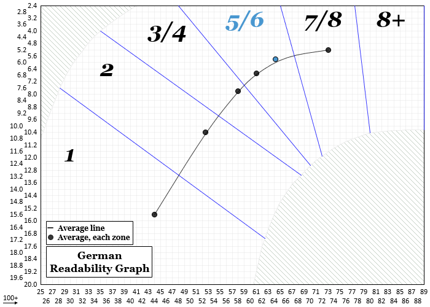
The Fry and Raygor graphs are very similar and are both interpreted in the same manner; however, there are a few differences between them. The Fry graph classifies documents within the 1st grade to doctorate level. In contrast, Raygor concentrates on the range of 3rd grade to the sophomore collegiate level. It is recommended to only use Raygor graphs for secondary-age materials.
Another difference is that the Fry graph is influenced by high-syllable words, while the Raygor graph is influenced by long words. Long sentences remain a key factor for both of these graphs, though.
The other difference between the two graphs is that they are inverted from one another. In a Fry graph, the long-sentence region is in the bottom left-hand corner (going downward), whereas in a Raygor graph the long-sentence region is in the top left-hand corner (going upward). However, the same rules apply for how to interpret the grade level and influence of difficult words vs. difficult sentences.
The FRASE graph is similar to Fry in terms of factors used and axis orientation. Its most influential factor (i.e., word vs. sentence difficulty) is determined in the same manner, and its Y (sentence) axis is descending. Below is an example of a FRASE graph:
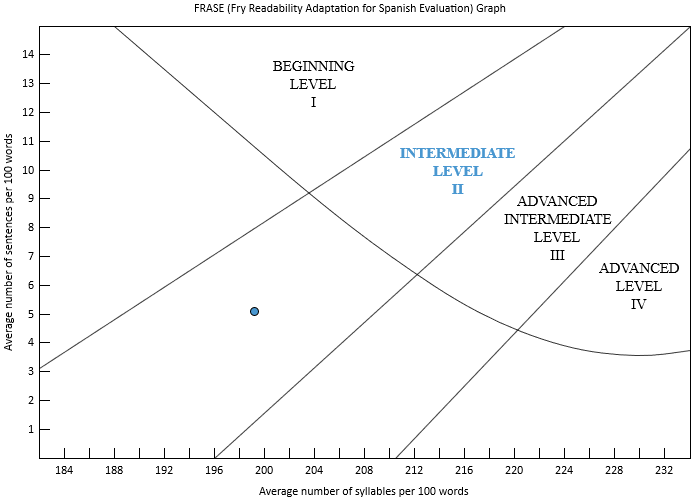
A key difference with FRASE is its use of reading levels (rather than grade levels). In the above example, we can see that the document has been scored at the Intermediate level. The other difference is that it is designed for Spanish text—note how its X (syllable-count) axis begins at 182, not 108.
The Crawford graph is also similar to Fry in terms of factors used. However, it differs from most other graphs in that it uses the interior of the plot to find its sentence-count factor (instead of an axis). Below is an example of a Crawford graph:
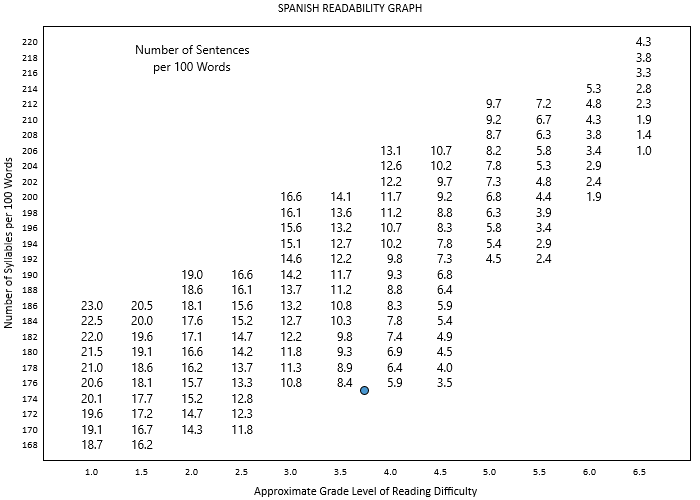
In the above graph, we can see that the intersection of the factors is 175 and 7. The number of syllables is 175 (y-axis). The number of sentences is approximately 7 (between 8.4 and 5.9 on the plot [corresponding to 175 on the y-axis]). From this intersection, the point’s x-axis value is 3.7. Hence, 3.7 is the grade-level score for this graph.
The Flesch chart plots a document’s factors onto a pair of “rulers” and then connects them to determine the Flesch score. This score ranges from 0 (“very difficult”) to 100 (“very easy”). Below is an example of a Flesch chart:

Danielson-Bryan 2—a variation of Flesch Reading Ease— includes a similar graphic, which also includes grade-level information:
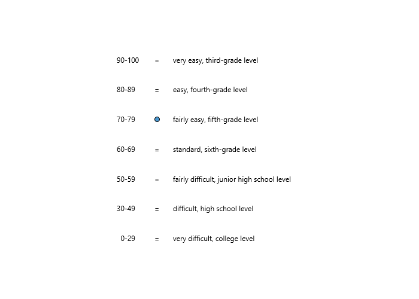
The INFLESZ Scale—another variation— plots a score (based on an adjusted FRE calculation) on a 0–100 scale. This score can then be compared between three different classification scales: INFLESZ, Szigriszt, and Flesch Reading Ease. (INFLESZ is preferred over Szigriszt, and Flesch Reading Ease is only included for reference.) Similar to Flesch, it groups its scores from “MUY DIFÍCIL” (“very difficult”) to “MUY FÁCIL” (“very easy”).
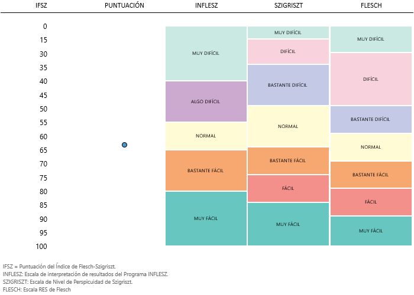
Similar to a Flesch chart, the Lix gauge plots a document’s Lix index score on a chart showing its difficulty level:

In the above chart, we can see that Lix scores can range from 0 (“very easy”) to 60+ (“very difficult”).
There is also a variation of the Lix gauge that is adjusted for German materials:
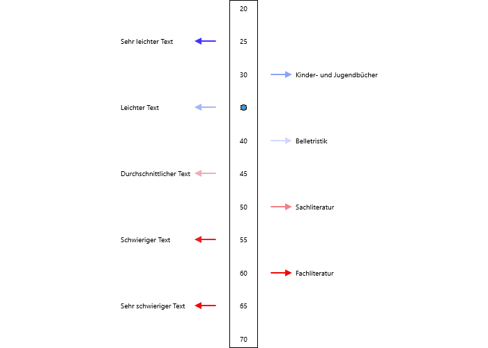
This version adjusts the scaling of the score, assuming that German text is inherently more difficult than other languages. It also includes additional levels of difficulty (e.g., “children and young adult”).
Note that if you plot any of these graphs, its score can also be viewed in the Readability Scores area.
As a final note, batch projects include multi-document versions of all these graphs:
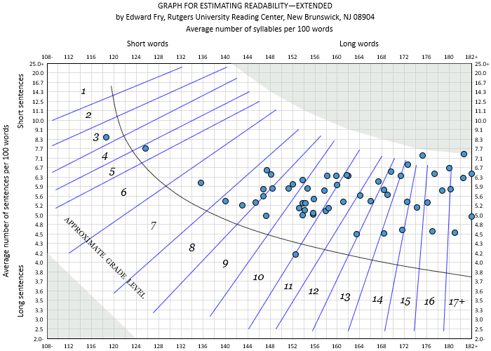
Here, we can see that an entire collection of documents is plotted onto a single Fry graph. This is useful for visualizing the grade-level layout of a group of documents. In the above example, we can see that the documents are clustering in the high-school region. We can also interpret that complex words are heavily influencing the documents’ difficulty.
You can also print or save a blank copy of any of these graphs. This is useful for printing handouts for instructors or students to use. To print a blank graph, go to the Readability tab on the ribbon, click the Blank Graphs button, and select the graph that you wish to save.
5.3 Goals
Goals are recommended score ranges that a document should fall within.
If a project contains goals, then a Goals section will be available to show whether they were met. For example:
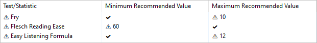
In the above image, we can see that this project is recommending:
- Fry should not be higher than 10
- Flesch Reading Ease should be higher than 60
- Easy Listening Formula should not be higher than 12
Also, the warning icons indicate that currently the document is failing to meet all these criteria.
Goals can be created through a test bundle. When the bundle is applied, both its tests and goals will be added to the project.
5.4 Statistics
After opening a project, click on the Summary Statistics icon on the project sidebar to view the document’s statistics:

The Report and Tabular Report windows display the document’s statistics in two formats: a formatted report and a tabular report, respectively. Both of these reports contain the following statistics:
- number of paragraphs and average number of sentences per paragraph
- number of sentences and average number of words per sentence
- number and percentage of difficult sentences
- number of units/independent clauses (This statistic is only available if Extended Information is enabled.)
- number of interrogative sentences (questions)
- number of exclamatory sentences
- number of words
- number of unique words
- number of syllables and average number of syllables per word
- number of characters (with and without punctuation) and average number of characters per word
- number and percentage of numerals
- number and percentage of proper nouns (not available for German projects)
- number and percentage of total (and unique) monosyllabic words
- number and percentage of total (and unique) 3+ syllable words
- number and percentage of total (and unique) hard SMOG words. This statistic is only available if SMOG is included in the project
- number and percentage of total (and unique) hard Fog words. This statistic is only available if Fog is included in the project
- number and percentage of total (and unique) 6+ letter words
- number and percentage of total (and unique) unfamiliar words (This includes word lists such as New Dale-Chall and Spache. These statistics are only available if the respective tests are included in the project.)
- number of grammar errors
- text size (the size of the text in a document, not the actual file size). (This statistic is only available if Extended Information is enabled.)
Statistics for any custom familiar-word tests will also be included in this window.
A Notes section may be included at the bottom of the formatted report if there are any items of interest detected (e.g., a high sentence-length average). If your document requires improvement, then this section is usually a good place to begin.
3+ syllable words and Fog and SMOG hard words are all the same except for how numerals (e.g., phone numbers and dates) are handled. SMOG always sounds out each digit of a numeric word, whereas Fog ignores numeric words. You can control how numeric words are handled from the Document Indexing section of the Options dialog (available on the Tools tab).
5.5 Words Breakdown
After opening a project, click on the Words Breakdown icon on the project sidebar to view the lists, highlighted reports, and graphs of difficult words:

Reviewing Word Lists
The types of word lists that may be shown are:
3+ Syllables: This list displays all the document’s words that are three or more syllables. It also displays how many syllables each word contains and their respective frequency counts. This window is only available if the document contains 3+ syllable words.
6+ Characters: This list displays all the document’s words that are six or more characters. It also displays how many characters each word contains and their respective frequency counts. This window is only available if the document contains 6+ character words.
Dale-Chall (Unfamiliar): This list displays all the document’s words that are not in the New Dale-Chall familiar words list and their respective frequency counts. The New Dale-Chall word list is a collection of words that are considered to be familiar to most fourth grade readers. Words in the document that are not found on this list may be less familiar to younger readers and hence more difficult. This window is only available if a Dale-Chall related test is included in the project.
Spache (Unfamiliar): This list displays all the document’s words that are not in the Spache familiar words list and their respective frequency counts. The Spache word list is a collection of words that are considered to be familiar to most primary-age readers. Words in the document that are not found on this list may be less familiar to younger readers and hence more difficult. This window is only available if the Spache test is included in the project.
Harris-Jacobson (Unfamiliar): This list displays all the document’s words that are not in the Harris-Jacobson familiar words list and their respective frequency counts. The Harris-Jacobson word list is a collection of words that are considered to be familiar to most second-grade readers. Words in the document that are not found on this list may be less familiar to younger readers and hence more difficult. This window is only available if the Harris-Jacobson test is included in the project.
All Words: This list displays all the words from the document and their respective frequency counts.
Key Words: This list is the same as All Words, except that it excludes filenames, numeric words, and common words, and then combines the remaining words. In regards to combining words, words with the same root will be merged into a single row. For example, report, reports, and reporting will be combined into one row, with the frequency counts for all three words also combined. As for excluding words, common words (e.g., the), numerals, and filenames are not included in this list. (If no words can be combined and there are no common words to ignore, then this list will not be shown.)
If you are ignoring incomplete sentences, then these lists will only include the words from complete sentences. If you need to review all the words from the document, then select the option Do not exclude any text. Refer to Section 21.1 to learn more about how Readability Studio handles incomplete sentences.
To find the most complex words, sort the Syllable Count column of the 3+ Syllables list. You can sort any of the columns by clicking on the column header. To change the sorting order to either ascending or descending, click the column header a second time. As you can see below, the words with the most syllables are now shown at the top of the list.
If your test scores indicate that the document is too difficult for your audience, then you should review overly complex or long words. You may consider seeing if any shorter synonyms could be used in their place. The same type of review can also be performed with the 6+ Characters list by sorting the Character Count column.
To help find the most difficult words for the New Dale-Chall list, select the Dale-Chall (Unfamiliar) subitem and sort the Frequency column. The most frequently occurring words are the ones that should be replaced with more familiar synonyms that most readers would recognize.
To find a specific word in a list, type the word into the Search bar at the top of program and hit the Enter (, ) or ⌤ () button on your keyboard. You can also select the list and begin typing the word. If the word is in the list, then the selection will move to it.
Double-click on any word in these lists to display the respective highlighted text report with the first instance of that word selected.
Reviewing Word Reports
The different types of text reports that may be shown are:
3+ Syllables: This text report contains the document with all the words that are three or more syllables highlighted. This window is only available if the document contains 3+ syllable words.
6+ Characters: This text report contains the document with all the words that are six or more characters long highlighted. This window is only available if the document contains 6+ character words.
Dale-Chall (Unfamiliar): This text report contains the document with all the New Dale-Chall unfamiliar words highlighted. The New Dale-Chall word list is a collection of words that are considered to be familiar to most fourth grade readers. Words in the document that are not found on this list may be less familiar to younger readers and hence more difficult. This window is only available if a Dale-Chall related test is included in the project.
Spache (Unfamiliar): This text report contains the document with all the Spache unfamiliar words highlighted. The Spache word list is a collection of words that are considered to be familiar to most primary-age readers. Words in the document that are not found on this list may be less familiar to younger readers and hence more difficult. This window is only available if the Spache test is included in the project.
Harris-Jacobson (Unfamiliar): This text report contains the document with all the Harris-Jacobson unfamiliar words highlighted. The Harris-Jacobson word list is a collection of words that are considered to be familiar to most primary-age readers. Words in the document that are not found on this list may be less familiar to younger readers and hence more difficult. This window is only available if the Harris-Jacobson test is included in the project.
You can change both the font and highlighting color by opening the Project Properties dialog and selecting Highlighted Reports. Note that changing these options from the Project Properties dialog will only affect the current project. If you want to make changes to any future projects, then go to the Options dialog from the Tools tab instead.
Reviewing Word-based Graphs
The different types of graphs that may be shown are:
Word Counts bar chart: This graph shows the total counts of each type of word (e.g., 3+ syllable words) and how each category compares to one another. This bar chart will appear like this:
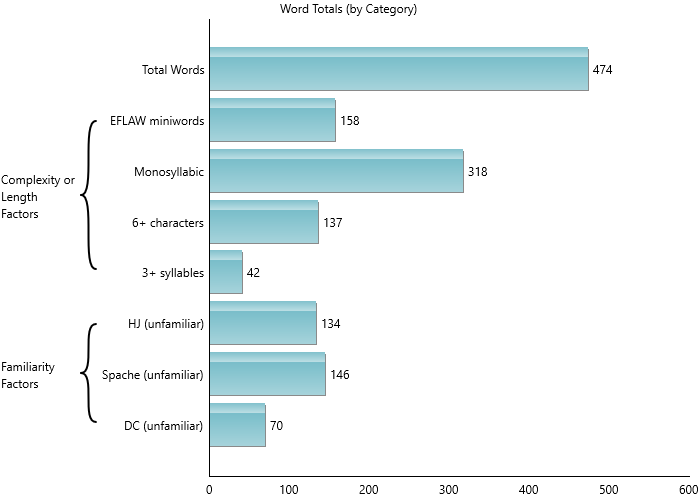
In the above example, we can see that there are 70 unfamiliar New Dale-Chall words, but only 42 three+ syllable words. From this, we could infer that we should first concentrate on replacing these unfamiliar words. Lists of these words can be found by clicking on the Difficult Words icon on the project sidebar.
Syllable Counts: This is a histogram of the words, grouped by syllable count.
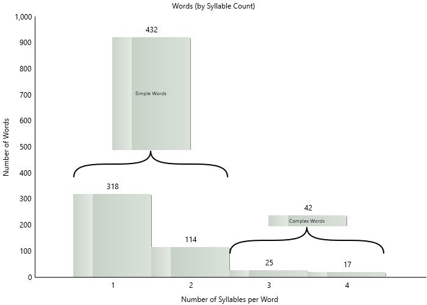
In the above histogram, we see that most of the words are either 1 or 2 syllables. There are only 25 three-syllable words and 17 four-syllable words in the document. (Note that selecting a bar will display the first 25 words within that syllable group.) Combined, there are 42 complex words, as shown by the cumulative group bar above the 3 and 4 bars.
The total value of a word count reflects the number of words, including repeats of the same word. The unique value of a word count reflects the number of words, excluding repeats. For example, a document contains the word liquidation three times. This word will be tallied three times when factored into the total word count, but only once into the unique word count. Most tests use the total word count variable, although there are some that use unique counts (e.g., Spache uses its unique unfamiliar word count).
Syllable Counts: This is a donut chart of the words, grouped by syllable count (along the inner ring). Additionally, an outer ring categorizes these subgroups into simple and complex words. (One- and two-syllable words are considered simple, while three [and higher] syllable words are complex.)
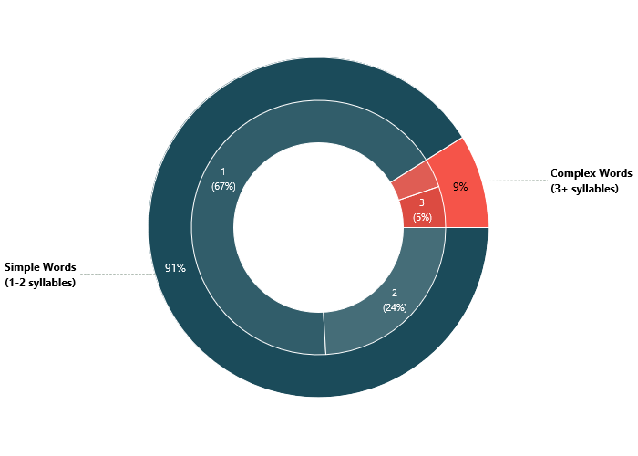
The above donut chart shows similar results to the previous histogram. With this visualization, however, it is easier to compare the overall complex- and simple-word groups. In this case, less than 10% of the document consists of complex words. Also, looking at the inner ring, we can see that ~two-thirds of the words are one-syllable.
Key Word Cloud: In conjunction with the Key Words list, a key word cloud is also included to visualize the main concepts of the document(s).
A word cloud shows words from a document in a random layout with randomly assigned colors. The size of each word is based on its relative frequency within the document. In other words, the larger the word, the more often it is used compared to other words.
This particular word cloud displays the ~100 most frequently occurring key words appearing in the document. Like the Key Words list, these will be combined words with uncommon ones (e.g., the) removed. In the case of combined words, the most frequent instance of similar words will be shown. For example, if the word report appears more times than reporting and reports, then report will appear in the word cloud. Also, the size of the word report will be based on the number of times report, reporting, and reports all appear.
To focus on important topics, only words occurring two or more times will be shown (unless there are fewer than one unique hundred words).
In a batch project, this word cloud will show the key words across all documents.
5.6 Sentences Breakdown
After opening a project, click on the Sentences Breakdown icon on the project sidebar to view a breakdown of the document’s sentences. This includes the following:
A list of overly-long sentences:

Note that if you are ignoring incomplete sentences, then this list will only include the complete sentences. If you need to review all the sentences from the document, then select the option Do not exclude any text. Refer to Section 21.1 to learn more about how Readability Studio handles incomplete sentences.
To find the longest sentence, sort the Word Count column into descending order. As you can see below, the longest sentence is now shown at the top of the list.
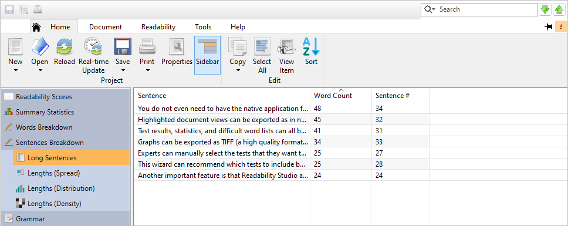
To view any sentence in its original context, double-click on it. This will take you to the Highlighted Report page with that sentence selected.
If the test scores indicate that the document is too difficult for your audience, then review the overly-long sentences. You should consider splitting these sentences into smaller ones and revising any wordy items.
Note that if there are no long sentences in your document, then this window will not be included.
A box plot of the sentence lengths (measured by word count) is also available:
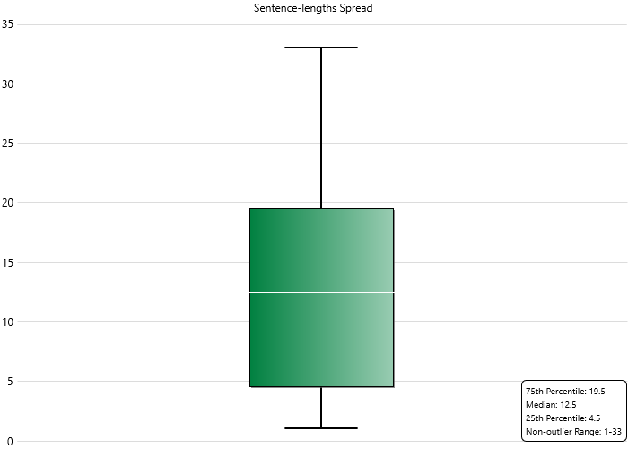
The first item to review is the box, which measures the percentiles range. Above, we see that this range is 4.5–19.5, meaning that half of the sentences are between 4.5–19.5 words.
Next, note the line drawn across the box—this represents the median. In this case, the median is 12.5, which means that the middle sentence is 12.5 words. This median line is almost equidistant, which implies that the sentence lengths in this range are evenly distributed.
The last items to review are the whiskers, which represent the non-outlier range. The datapoints in this range are outside the middle half the data, but still within a reasonable limit. Above, we can see that the remaining sentences are skewed towards having longer sentences, with the largest being 33 words. Although 33 words is reasonable (compared to the box’s range), you may want to review some of these longer sentences.
Finally, any sentence lengths outside the non-outlier range will be displayed as red dots. These points represent sentences which are significantly longer (or shorter) than the others. Clicking on an outlier will display the sentence’s number, along with a preview of it.
A histogram is also available to visualize how the sentence lengths are distributed:
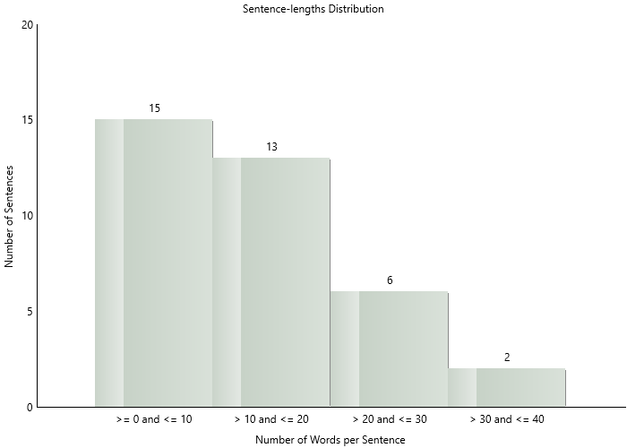
In the above graph, we can see a large portion of short sentences, with the rest falling into a normal distribution.
A heatmap of these sentence lengths is also included:
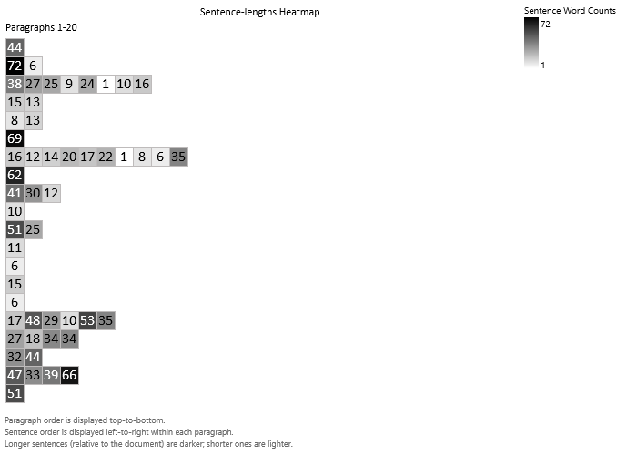
This graph displays the document’s sentence, going from left-to-right, top-to-bottom. Each square represents a sentence, and the square’s color represents its word count. The darker a square, the higher the sentence’s word count (relative to the document). Likewise, lighter squares represent the shorter sentences in the document. This is useful for visualizing the trend and density of a document’s longer sentences. For example, if sections of the grid are darker than others, then the sentences are longer in these spots and should be reviewed. The example below demonstrates this:
In the above graph, note how the first couple of sentences are the longest. After that, the middle section has relatively shorter sentences. Finally, the last section contains a significant block of the document’s longer sentences.
Although black squares refer to the longer sentences, this may not imply that these sentences are overly long. It only means that they are the longest, relative to the rest of the document. With this in mind, this heatmap is useful for locating overly-dense sections of longer sentences. In other words, clusters of black squares indicate problematic areas where lengthy sentences are running together.
To find the location of a sentence, click on the square and its sentence number will be shown. Also, if the sentence’s length is an outlier (compared to the other sentences), then a preview of it will also be shown.
Refer to example Section 15.6 for a more detailed tutorial on sentence heatmaps.
5.7 Grammar
After opening a project, click on the Grammar icon on the project sidebar and select the Highlighted report subitem. This text report will display the document with its difficult sentences and wordy items highlighted.

Note that each sentence is followed by its respective word count (in parentheses).
You can change both the font and highlighting color by opening the Project Properties dialog and selecting Highlighted Reports. Note that changing these options from the Project Properties dialog will only affect the current project. If you want to make configuration changes for future projects, then go to the Options dialog from the Tools tab instead.
For documents with numerous sentences over twenty words, it is recommended to use outlier searching. Open the Project Properties dialog, select Document Indexing, and select the option Outside sentence-length outlier range. This will make it so that only the extremely long sentences (compared to the other sentences in the document) are highlighted. This helps pinpoint the most troublesome sentences that need to be shortened.
Reviewing Lowercased Sentences
After opening a project, click on the Grammar icon on the project sidebar and select the Lowercased Sentences subitem. This window will display a list of all sentences that begin with lowercased words (which is usually a typo).
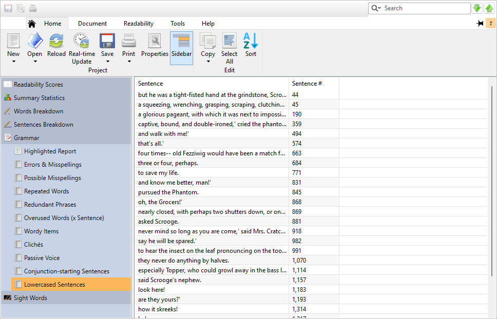
Lowercased sentence searching is applied to all sentences. Incomplete sentences will be reviewed for this, even if they are excluded from the analysis.
Also note that if the option Sentences must begin with capitalized words is enabled, then this feature will be limited to sentences that begin new paragraphs. If you want to search for any possible sentences that begin with lowercased words, then you should leave this option unchecked.
To view any sentence in its original context, double-click on it. This will take you to the Highlighted Report page with that sentence selected.
Note that if there are no lowercased sentences in your document, then this window will not be included.
Reviewing Conjunction-starting Sentences
After opening a project, click on the Grammar icon on the project sidebar and select the Conjunction-starting Sentences subitem. This window will display a list of all sentences which begin with coordinating conjunctions.
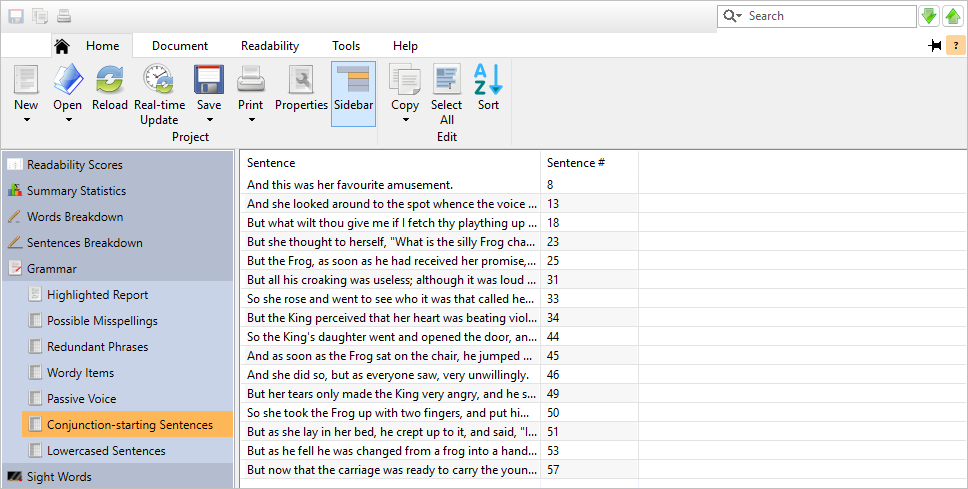
Beginning sentences with conjunctions is not an issue for most writing, but should be avoided with professional publications. This feature is provided to grammatically improve professional documents.
The conjunctions that Readability Studio searches for are the most common coordinating conjunctions. These are:
- and
- nor
- but
- or
- yet
- so
Generally for technical writing, only separate clauses should begin with these words, not sentences. Any sentence that begins with these words should be combined with the previous sentence. Another option would be to replace the conjunction. For example, and could be replaced with In addition.
This search is applied to all sentences. Incomplete sentences will be reviewed for this, even if they are excluded from the analysis.
To view any sentence in its original context, double-click on it. This will take you to the Highlighted Report page with that sentence selected.
Note that if there are no conjunction-starting sentences in your document, then this window will not be included.
Reviewing Repeated Words
After opening a project, click on the Grammar icon on the project sidebar and select the Repeated Words subitem. This window will display a list of all repeated words from the document.
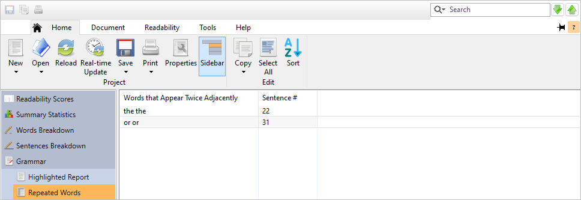
A repeated word is when the same word appears after itself (which is usually a typo). For example:
Gabi gave her report to to the manager.
In this case, the word to was accidentally typed twice. Readability Studio will consider this a repeated word and include it in this list.
Repeated words are bound to the sentence level. If the same word ends one sentence and begins the next, then it will not be considered a repeated word. For example, Blake would not be considered a repeated word here:
Gabi gave her sales report to Blake. Blake really appreciated Gabi’s promptness.
Repeated word searching is applied to all sentences. Incomplete sentences will be reviewed for this, even if they are excluded from the analysis.
To view any repeated word in its original context, double-click on it. This will take you to the Highlighted Report page with that repeated word selected.
Note that if there are no repeated words in your document, then this window will not be included.
Refer to Section 21.6 for more information on how repeated words are detected.
Reviewing Article Mismatches
After opening a project, click on the Grammar icon on the project sidebar and select the Article Mismatches subitem. This window will display a list of articles (i.e., a and an) that do not match their following noun.
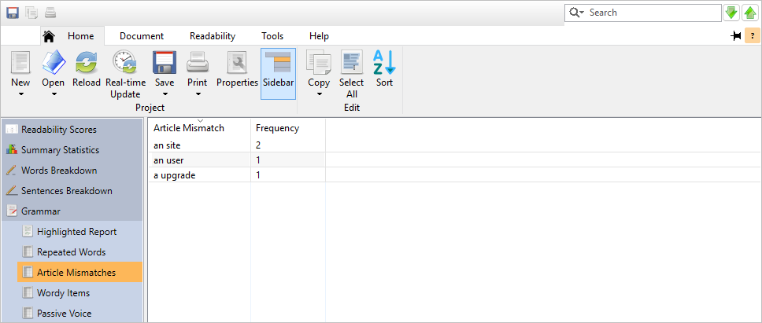
For example, the following articles would be marked as mismatching:
- a electronic
- an textbook
This search is applied to all sentences. Incomplete sentences will be reviewed for this, even if they are excluded from the analysis.
To view any item in its original context, double-click on it. This will take you to the Highlighted Report page with that item selected.
Note that if there are no article mismatches in your document, then this window will not be included.
Refer to Section 21.7 to learn more.
Reviewing Wording Errors & Misspellings
After opening a project, click on the Grammar icon on the project sidebar and select the Errors & Misspellings subitem. This window will display a list of misused phrases, grammatically incorrect wording, and known misspellings from each document.
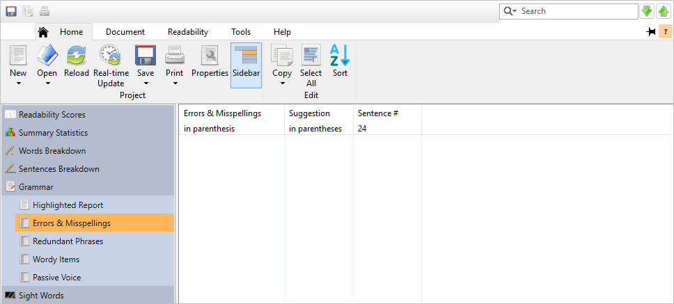
For example:
We is offering standard benefits (e.g., 401K matching and health ensurance), as well as French benefits to all new employees.
In this case, We is is not grammatically correct, and We are will be offered as a suggested replacement. Also, ensurance is a misspelling of insurance (which will be the suggested replacement). Finally, French benefits is not the correct expression and fringe benefits will be offered as a suggested replacement. All of these will be considered wording errors and shown in this list.
Wording errors are bound to the sentence level. If part of a phrase ends one sentence and begins the next, then it will not be considered an error.
This search is applied to all sentences. Incomplete sentences will be reviewed for this, even if they are excluded from the analysis.
To view any wording error in its original context, double-click on it. This will take you to the Highlighted Report page with that phrase selected.
Note that if there are no errors in your document, then this window will not be included.
Reviewing Possible Misspellings
After opening a project, click on the Grammar icon on the project sidebar and select the Possible Misspellings subitem. This window will display a list of all possible misspellings from the document.
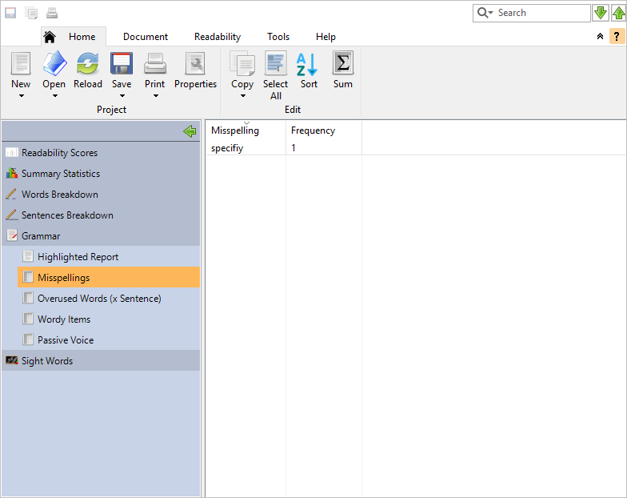
Options for controlling how misspellings are searched for are available in the Grammar options.
Misspelling searching is applied to all sentences. Incomplete sentences will be reviewed for this, even if they are excluded from the analysis.
To view any misspelling in its original context, double-click on it. This will take you to the Highlighted Report page with that word selected.
To add words to your dictionary, first select them in this list. Then, click on the Document tab, and click the arrow next to the Spell Checker button. Then, select Add Selected Words and the selected words in this list will no longer be reported as misspellings.
To edit your custom dictionary, click on the arrow next to the Spell Checker button and select Edit… to show the Edit Custom Dictionary dialog. From here, you can add, remove, or edit the words in your custom dictionary.
To change your spell-checking options, click on the arrow next to the Spell Checker button and select Settings… to edit your grammar settings.
Note that if there are no misspellings in your document, then this window will not be included.
Reviewing Redundant Phrases
After opening a project, click on the Grammar icon on the project sidebar and select the Redundant Phrases subitem. This window will display a list of redundant phrases (and suggested replacements) from the document.
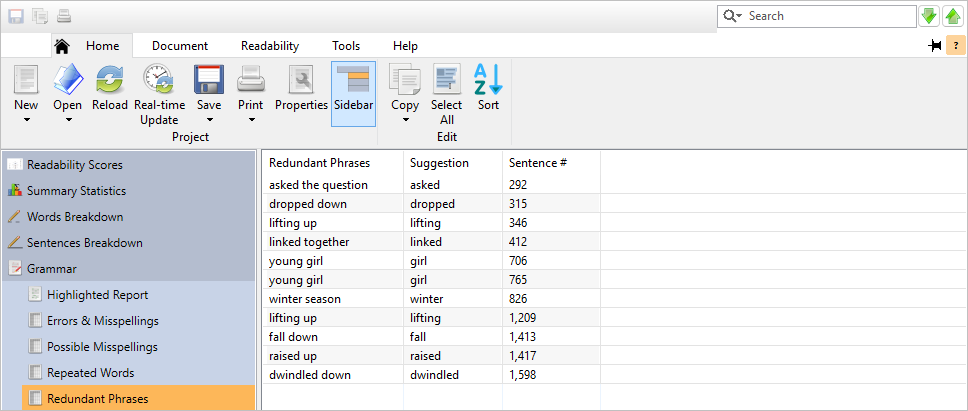
A redundant phrase is when a modifier expresses something that is already implied by the noun it is modifying. For example:
Gabi and Blake collaborated together on the report. They should have a brief summary ready later today.
In this case, collaborated together and brief summary are redundant. Collaboration already implies two or more people working together. The together in this phrase adds nothing and just makes this sentence wordy. As for brief summary, summaries are always brief; hence, the redundancy in that phrase. Readability Studio will consider these as redundant phrases and include them in this list.
Redundant phrases are bound to the sentence level. If part of a phrase ends one sentence and begins the next, then it will not be considered a redundant phrase. For example, brief. Summaries would not be considered a redundant phrase here because the words are in different sentences:
Gabi and Blake need to be brief. Summaries are very important before presenting a report.
Redundant phrase searching is applied to all sentences. Incomplete sentences will be reviewed for this, even if they are excluded from the analysis.
To view any redundant phrase in its original context, double-click on it. This will take you to the Highlighted Report page with that phrase selected.
Note that if there are no redundant phrases in your document, then this window will not be included.
Reviewing Wordy Items
After opening a project, click on the Grammar icon on the project sidebar and select the Wordy Items subitem. This window will display a list of wordy phrases and difficult words (and their suggested replacements) from the document.
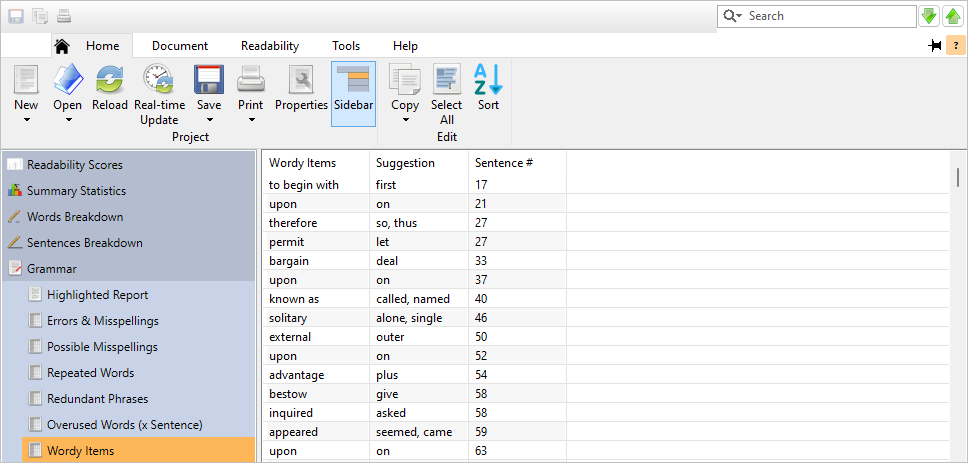
A phrase is wordy if it contains too many words or contains complex words that could be replaced by simpler ones. For example:
Over the course of the presentation, Blake amazed the Provost with his data visualizations.
In this case, Over the course of is wordy. Readability Studio will consider this a wordy phrase and offer during or throughout as replacements.
Wordy phrases are bound to the sentence level. If part of a phrase ends one sentence and begins the next, then it will not be considered a wordy phrase. For example, a host of would not be considered a wordy phrase here because its words are in two different sentences:
For the party, we need a host. Of course he should be very funny.
Wordy-item searching does not affect readability calculations, so this analysis is applied to all sentences. Incomplete sentences will be reviewed for this, even if they are excluded from the analysis.
To view any wordy item in its original context, double-click on it. This will take you to the Highlighted Report page with that item selected.
Note that if there are no wordy items in your document, then this window will not be included.
Reviewing Passive Voice
After opening a project, click on the Grammar icon on the project sidebar and select the Passive Voice subitem. This window will display a list of passive phrases.
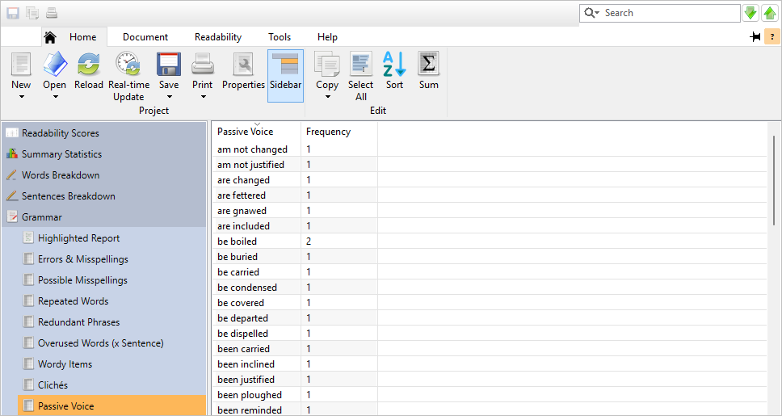
For example, the following would be marked as passive:
The show had been given many awards by the academy.
Although not a grammatical error, passive voice can cause confusion as to who is doing what to whom. In the above example, the ordering of words makes it difficult for early readers to understand who was giving the awards. The following would be direct and clear:
The academy gave the show many awards.
This search is applied to all sentences. Incomplete sentences will be reviewed for this, even if they are excluded from the analysis.
To view any item in its original context, double-click on it. This will take you to the Highlighted Report page with that item selected.
Note that if there are no passive phrases in your document, then this window will not be included.
Reviewing Clichés
After opening a project, click on the Grammar icon on the project sidebar and select the Clichés subitem. This window will display a list of clichés (and their suggested replacements) from the document.
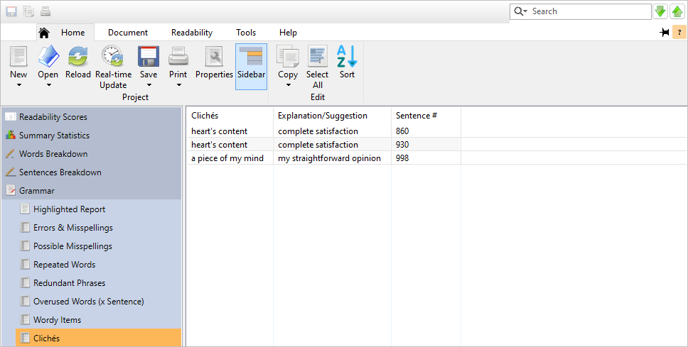
A cliché is an overused phrase that should be avoided if you are writing professional documents. In the context of readability, clichés can be unfamiliar to early (young or ESL) readers. For example:
He is acting very off the wall.
In this case, off the wall is a cliché and will be listed with unusual being offered as a replacement. A phrase such as this is considered tired and would not appear professional in a business report or technical document. Also, those new to English may not understand what this expression means. If you are targeting early readers, then you should avoid clichés for clarity.
Clichés are bound to the sentence level. If part of a phrase ends one sentence and begins the next, then it will not be considered a cliché.
Cliché-searching is applied to all sentences. Incomplete sentences will be reviewed for this, even if they are excluded from the analysis.
To view any cliché in its original context, double-click on it. This will take you to the Highlighted Report page with that cliché selected.
Note that if there are no clichés in your document, then this window will not be included.
Reviewing Overused Words (x Sentence)
After opening a project, click on the Grammar icon on the project sidebar and select the Overused Words (x Sentence) subitem. This window will display a list of all sentences that use the same word multiple times. (These are more of style suggestions, rather than grammar issues.) When reviewing these, it is recommended to change some of the repeated words to add more variety to your content.
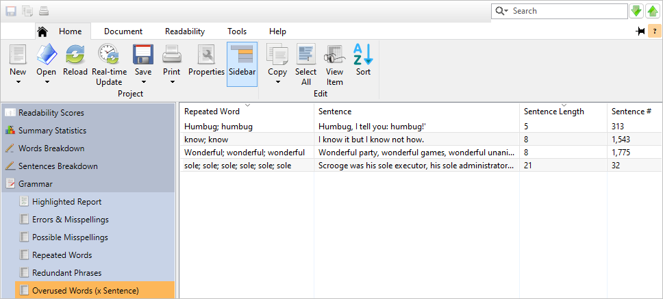
This check is applied to all sentences. Incomplete sentences will be reviewed for this, even if they are excluded from the analysis.
Numeric words, proper nouns, words containing less than three letters, and common words (e.g., the) are excluded from this review.
Also, a sentence with a pair of repeated words that may be part of the same phrase are ignored. For example:
When they asked Blake if he would be willing to work over the weekend, he just laughed and laughed.
Finally, a word must appear on average once every fifth word in the sentence. For example, a word appearing twice in an eleven-word sentence will not be counted. If the sentence is 10 words, however, it will be counted.
Note that if there are no sentences with overused words in your document, then this window will not be included.
To view any sentence in its original context, double-click on it. This will take you to the Highlighted Report page with that sentence selected.
5.8 Dolch Sight Words
The Dolch Sight Words (456–60) represent the most frequently occurring service words1 in most text, especially children’s literature. Early readers need to learn and recognize these words to attain reading fluency. Many of these words cannot be sounded out or represented by pictures; therefore, they must be learned by sight2.
If you are writing educational materials for early readers, then use as many of these words as possible to help readers practice them. Also, keep the percentage of non-Dolch words low so that readers can better focus on the sight words.
Readability Studio offers a suite of Dolch statistics and graphs as a tool for educators and writers targeting early readers. If you are creating material intended to help early readers practice Dolch words, then it is recommended to include this in your project. To add Dolch statistics to your project, go to the Readability tab and select either Primary-age Reading or Second Language Reading and then Dolch Sight Words. A Dolch Sight Words icon will appear at the bottom of the project sidebar—clicking on that will display all the Dolch information.
Reviewing the Dolch Statistics
After opening a project, click on the Dolch Sight Words icon on the project sidebar and select the Dolch Summary subitem to view the document’s Dolch statistics:
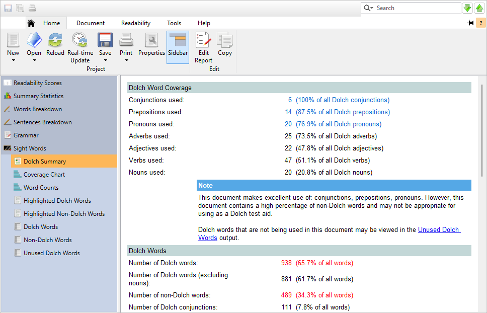
There are two types of statistics included: Dolch coverage and raw Dolch word counts.
The Dolch Word Coverage section displays how much of each category is used in the document. For example, if six of the conjunction Dolch words are used in the document, then 6 will be displayed next to Conjunctions used. The percentage will also be included in parentheses after these counts. In this case, it will be 100% because there are six words on the Dolch conjunction list.
Notes will be shown at the bottom of the Dolch Word Coverage section to indicate which (if any) categories are being used well by your document. This is the best way to see whether or not your document is useful as a Dolch practice tool.
If a document does not provide good coverage for any of the categories and/or contains numerous non-Dolch words, then it will not be an appropriate Dolch training document. This does not necessarily mean that it is not an appropriate document for younger readers. It simply means that the document does not use enough of the Dolch words to help readers learn these words. For example, The Tale of Peter Rabbit has decent coverage of the Dolch conjunctions and prepositions, but it also contains a large percentage of non-Dolch words. This book’s readability levels indicate that it is proper for young readers. However, its high non-Dolch words percentage will make it inappropriate for readers to use it for practicing Dolch words.
To graphically view the Dolch coverage, click on the Coverage Chart icon. This will display a bar chart of these statistics, listed by category.
Below this is the Dolch Words section, which lists all the raw Dolch word counts, broken down by category. Each category includes its total and unique counts of words found in the document. For example, let us say that four unique words from the pronoun list are found in the document, each appearing twice. In this case, Number of Pronoun Dolch words will be eight (four words each appearing twice) and Number of unique Pronoun Dolch words will be four.
Note that there may be a slight discrepancy between a category’s coverage value and its unique word count. This will happen if your document contains variations of certain words, such as ask and asked. The program will treat morphological variations of a word the same as its root word when calculating coverage statistics. However, when calculating unique word statistics, different forms of words will be counted separately. For example, the words asked and asking will be counted as separate unique words; however, they both will be seen as “ask” when calculating the verb-list coverage.
To graphically view the Dolch words breakdown, click on the Word Counts subitem. This will display a bar chart of these statistics, listed by category.
Reviewing the Dolch Graphs
After opening a project, click on the Dolch Sight Words icon on the project sidebar. There are two graphs available for review: Dolch Coverage and Word Counts.
The Dolch Coverage graph displays how much of each category is used in the document. Refer to Section 5.8 for more information.
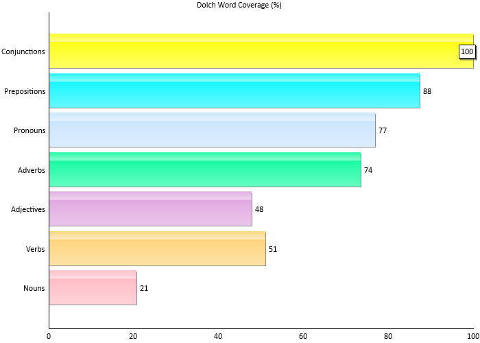
As we can see in the above graph, 87.5% of the Dolch prepositions are used in the document. Pronouns and adverbs are also well covered with 76.9% and 73.5%, respectively. However, less than half of the Dolch adjectives and nouns are used in the document. From this, we can see that this document may be useful for some Dolch categories, but not others.
The Words Breakdown graph displays all the raw Dolch word counts, broken down by category. Refer to Section 5.8 for more information.
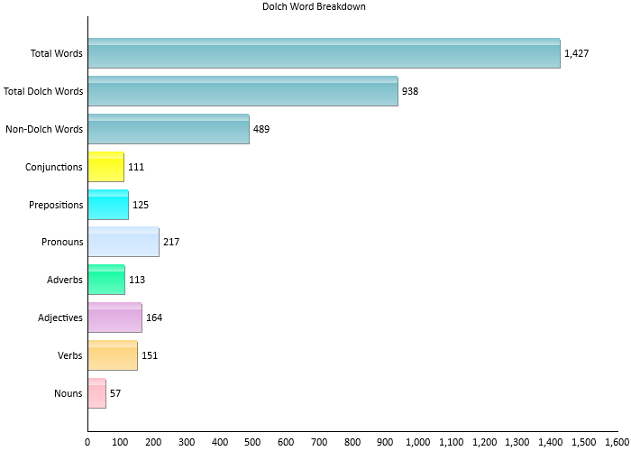
As we can see in the above graph, there are 938 total Dolch words used in this document. Unfortunately, there are also 489 non-Dolch words. Although there is a strong number of Dolch words, the high number of non-Dolch words may make this document a poor candidate for practicing Dolch sight words.
Reviewing the Dolch Highlighted Text
After opening a project, click on the Dolch Sight Words icon on the project sidebar. There will be two types of highlighted text reports available: Dolch Words and Non-Dolch Words.
The Dolch Words subitem will display the document with the Dolch words highlighted:
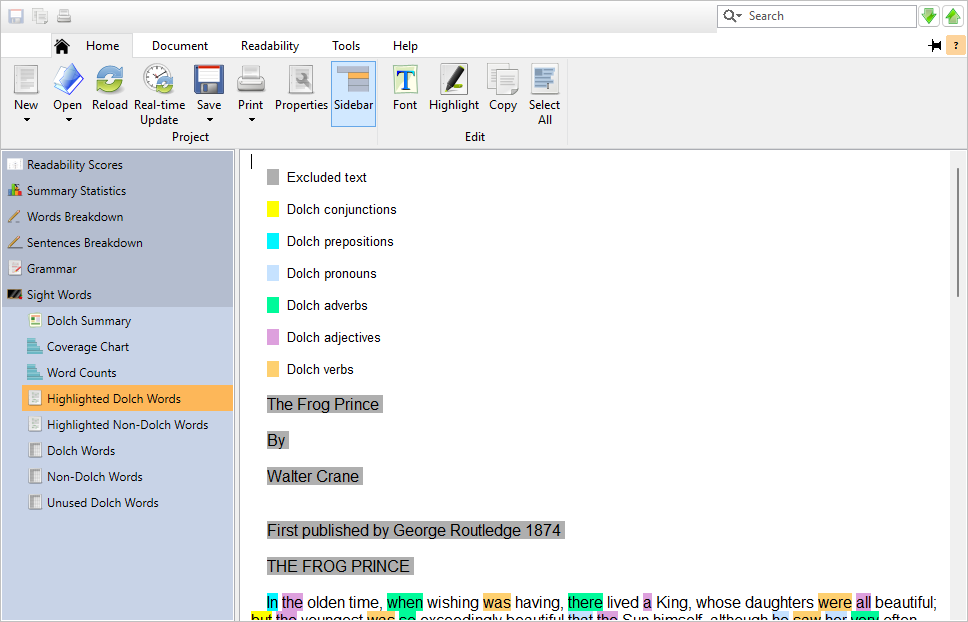
Each category (e.g., nouns) will be highlighted by a different color.
To customize category highlighting, click the Properties button on the Home tab to display the Project Properties dialog. Then select the Highlighted Reports icon and select the Dolch Sight Words subitem.
Here you can choose which categories to highlight and select their respective highlight colors.
The Non-Dolch Words subitem will display the document with all the non-Dolch words (words that do not appear in any of the Dolch lists) highlighted:
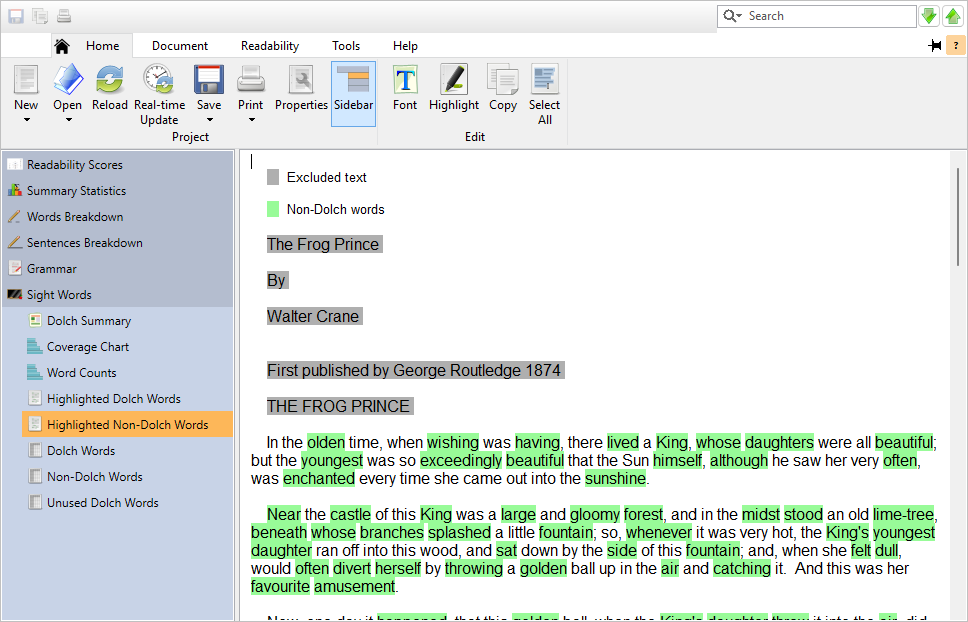
Reviewing the Dolch Word Lists
After opening a project, click on the Dolch Sight Words icon on the project sidebar. There will be three types of word lists available: Dolch Words, Non-Dolch Words, and Unused Dolch Words.
The Dolch Words subitem will display a list of the Dolch words from the document:
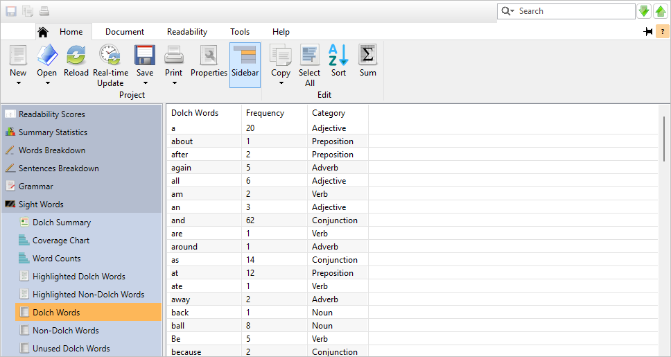
Next to each word will be two columns. The first column is Frequency, which will represent the number of times the word appears in the file. The second column is Category, which represents the Dolch category to which the word belongs.
Double-click on any word in this list to display the Dolch Words text report with the first instance of that word selected.
The Non-Dolch Words subitem will display a list of the words from the document that do not appear on any of the Dolch lists:
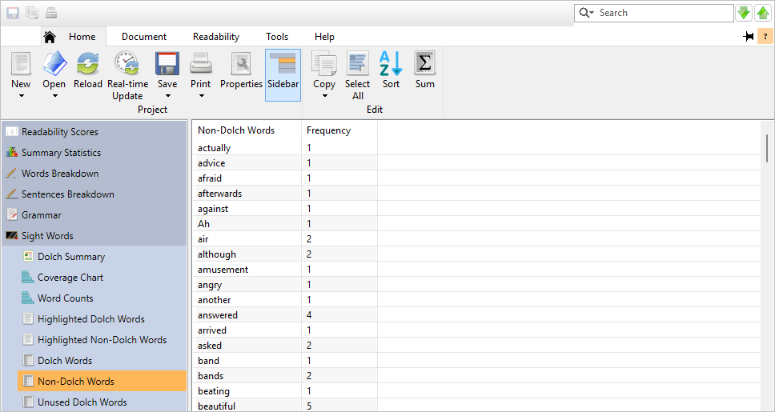
Next to each word will be a Frequency column, which will represent the number of times the word appears in the file.
A high volume of non-Dolch words will adversely affect a document’s ability to be a good Dolch practice tool. If the non-Dolch word count is high, consider replacing or removing words from this list that have high frequency counts.
Double-click on any word in this list to display the Non-Dolch Words text report with the first instance of that word selected.
The Unused Dolch Words subitem will display a list of the Dolch words that do not appear in the document:
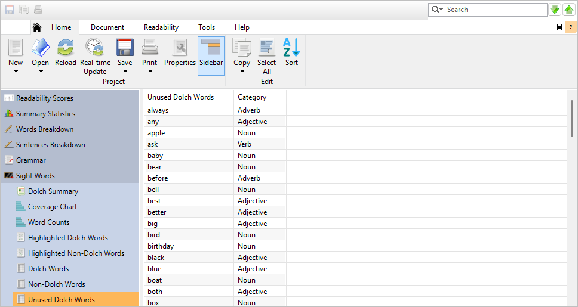
Next to each word will be a Category column, which represents the Dolch category that the word belongs to. If your document has low coverage of a category that you are targeting, try adding the words listed here to the document.